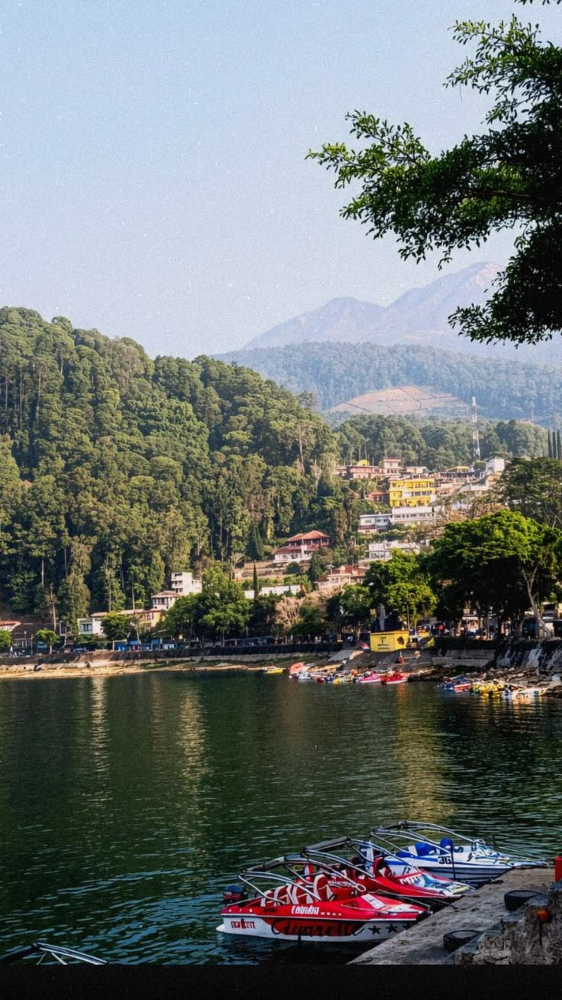

1 HariTelaga Sarangan, Magetan
Wisata telaga di lereng Gunung Lawu dengan udara sejuk dan pemandangan yang tenang.
- Transportasi pulang-pergi
- Tiket masuk
- Dokumentasi
Detail trip
Itinerary
- Pagi: berkumpul dan berangkat dari titik kumpul.
- Siang: tiba di Telaga Sarangan, menikmati telaga dan area sekitarnya.
- Sore: waktu bebas dan mencicipi kuliner lokal.
- Malam: perjalanan pulang ke titik kumpul.
Termasuk
- Transportasi pulang-pergi
- Tiket masuk kawasan wisata
- Dokumentasi perjalanan
Tidak termasuk
- Makan di luar yang disebutkan
- Pengeluaran pribadi
- Tiket wahana atau aktivitas tambahan
Catatan
Titik kumpul dan jam berangkat diinfokan setelah pendaftaran dikonfirmasi. Itinerary dapat menyesuaikan cuaca dan kondisi lokasi.
Rp150.000 / orang
Daftar